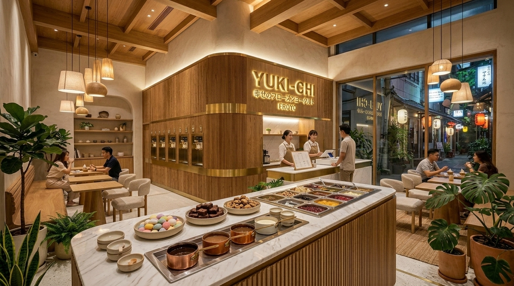

A unified Japandi aesthetic blending natural fluted timber, brass dispense curves, and an open central toppings island.
Curved fluted timber dispense wall, high wood beam ceiling, Japandi dining lounge, and the integrated central gourmet toppings bar.

Warm Japanese oak battens with recessed commercial soft-serve machines, brass trim handles, and subtle LED backlighting.
Central self-serve station featuring heated sauce wells and cold wells for fruit compotes and fresh mochis.
Minimalist curved chairs, natural linen cushions, warm 2700K pendant fixtures, and lush indoor greenery for prolonged customer dwell time.